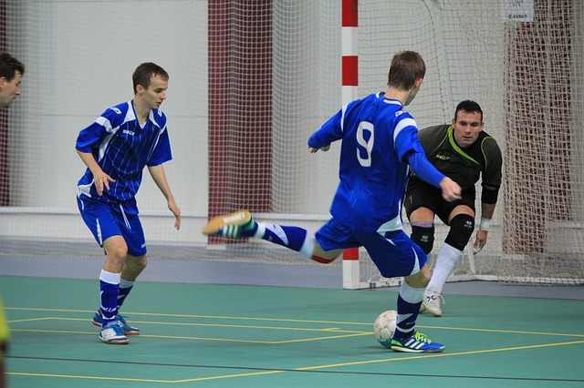
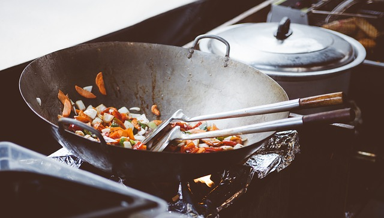
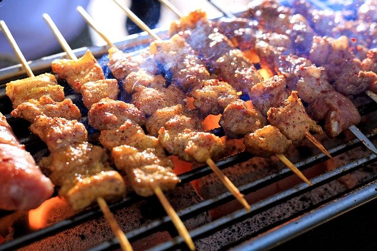

Hobi
1. Bernyanyi
Bernyanyi merupakan hobi yang saya gemari karena dengan menyanyikan sebuah lagu dapat membuat rasa yang tidak bisa saya ungkapkan dengan kata-kata dapat tersalurkan.
2. Futsal

Futsal merupakan salah satu metode saya untuk menghilangkan strees. Selain sehat karena termasuk olahraga yang dapat menguras tenaga dengan banyak, dengan bermain futsal saya juga mendapatkan banyak teman dari olahraga ini.
3. Memasak

Saya senang sekali memasak untuk diri sendiri dan untuk keluarga. Saya belajar memasak dari ibu saya, walaupun hanya olahan masakan rumahan menurut saya resep yang diajarkan ibu pada saya sangat membantu saya ketika saya ingin
memakan sesuai apa yang saya inginkan
Makanan favorit
1. Mie Ayam

Mie ayam menjadi makanan terfavorit saya karena harganya yang sangat terjangkau disemua lapisan masyarakat. Makanan ini sangat berbeda dengan olahan makanan Indonesia laiinya yang rata-rata harus digoreng. Saya menyukai mie
ayam yang mempunyai minyak jahe yang banyak dan daun bawang yang banyak
2. Nasi Goreng

Nasi goreng yang menjadi salah satu makanan terenak di dunia ini sangat mustahil jika orang yang lahir di Indonesia tidak menyukai makanan satu ini. Menurut saya kita sangat berunutng nenek moyang dapat membuat masakan yang
seenak ini.
3. Sate

Makanan yang mempunyai basic bumbu dasar saus kacang ini biasanya sering saya konsumsi saat sore hari menjelang petang. Selain murah makanan ini menjadi opsi ketika di rumah sedang tidak ada lauk dan uang sedang menipis.
Penyanyi favorit
Tulus
Saya mengiddolakan Tulus karena lagu yang dia ciptakan rata-rata bermakna tentang bagaimana kita harus bangkit dari keterpurukan. Saya sangat terbantu dengan lagu yang beliau ciptakan yang berjudul Manusia Kuat.